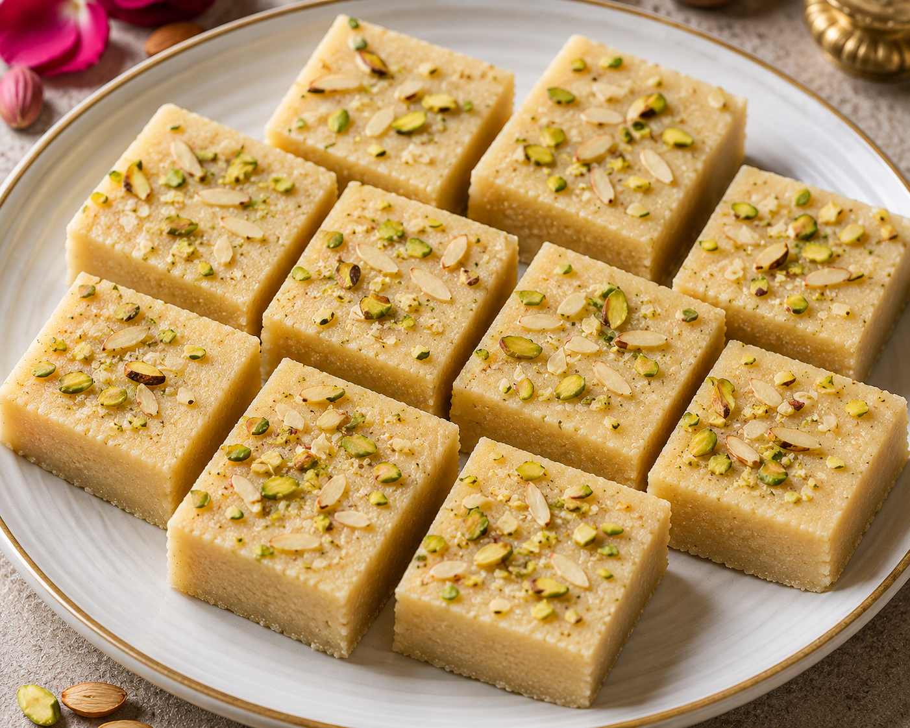

Berfi
Barfi is a popular traditional sweet made from milk, sugar, and ghee, often flavored with cardamom, coconut, or
nuts. It has a soft, fudge-like texture and is cut into small square pieces. Barfi is commonly served during
celebrations and festivals because of its rich taste and variety of flavors.
Go Back